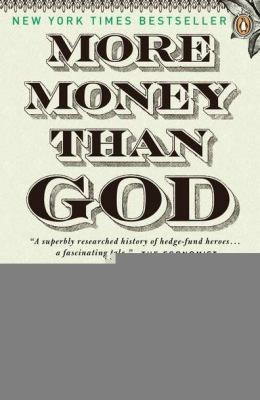

塞巴斯蒂安·马拉比（Sebastian Mallaby）1964年出生，1986年从牛津大学现代史专业毕业。此后他在《经济学人》工作十三年，1999年至2007年担任《华盛顿邮报》专栏作家兼编辑委员会成员，后加入美国对外关系委员会（Council on Foreign Relations）。在《富可敌国》之前，他写过世界银行行长詹姆斯·沃尔芬森的传记《世界银行家》（The World's Banker）；后来又出版格林斯潘传记《知者》（The Man Who Knew）和风险投资史《成功公式》（The Power Law）。《富可敌国》由Penguin Press于2010年出版，不同版次约四百五十页。马拉比称自己为本书进行了约三百小时采访，但书中的对冲基金数据仍来自公开资料、当事人口述和作者重建，透明度因机构而异。
全书按人物立章。首章写阿尔弗雷德·温斯洛·琼斯（Alfred Winslow Jones）：这位《财富》杂志前编辑1949年用10万美元建立合伙企业，把多头、空头和杠杆结合，并从实现利润中提取20%作为报酬；琼斯最初不收固定管理费，因此不能把后来的“2%管理费加20%提成”原样追溯到1949年。之后是迈克尔·斯坦哈特靠大宗交易起家的故事，以及索罗斯与斯坦利·德鲁肯米勒执掌的量子基金：1992年9月，他们建立巨额英镑空头，在“黑色星期三”前后获利逾10亿美元，是迫使英国退出欧洲汇率机制的市场压力之一，而非单独决定政策结果。朱利安·罗伯逊的老虎基金1998年管理规模约220亿美元，却因过早回避科技股、其他持仓亏损和赎回压力于2000年关闭。长期资本管理公司（LTCM）1998年不到四个月亏损约46亿美元，最终由纽约联储协调金融机构注资36亿美元。全书收尾于约翰·保尔森2007年通过信用违约互换做空次贷。
《富可敌国》获得2011年杰拉德·勒布奖（Gerald Loeb Award）年度商业图书奖，并入围2010年英国《金融时报》与高盛年度最佳商业图书奖短名单。《纽约时报》专栏作家大卫·布鲁克斯（David Brooks）评价它是“一本杰出的书”（"[A] superb book"）；《经济学人》称其为研究扎实的对冲基金史。书名所说的“新精英”带有作者对行业创新能力的肯定，因此阅读时也要留意叙事选择：章节集中于幸存或著名机构，失败基金通常在造成危机后才进入故事，普通关闭、合并和无法取得资料的基金更少出现，由此形成明显的可见性偏差。中文版《富可敌国：对冲基金与新精英的崛起》由徐煦翻译，湛庐文化出品、中国人民大学出版社2011年出版。
马拉比在书末给出一个具体判断：对冲基金之所以在2007至2008年危机中比银行扛得住，靠的不是监管更严，而是四条结构性差异——高水位线制度让基金经理只有在弥补此前亏损后才能重新提成，激励与业绩直接挂钩；创始人掌舵、决策链条短，能在头寸出问题时果断砍仓，不像委员会治理的银行层层拖延；对冲基金只做一件事，不像银行同时兼营多条业务线，注意力不会被稀释；杠杆和风险由基金自己承担后果，不像银行那样受资本充足率的错觉庇护。这是作者根据所选案例提出的制度解释，不是所有基金都满足的定律，也不构成放松监管的单独证据，还需与行业整体的关闭和清算数据对照。琼斯、索罗斯、罗伯逊、梅里韦瑟和保尔森的经历说明，杠杆、集中头寸与机构文化如何在具体年份改变结果。